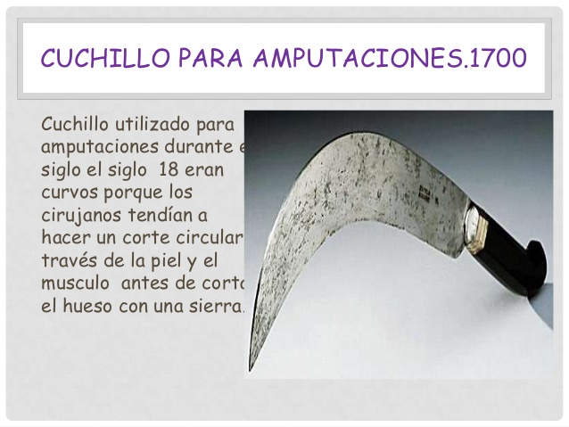

02/05/2017
Sufre dos amputaciones consecutivas de su miembro viril en el mismo díaFan Lung no ha tenido suerte en la vida. Su mujer le amputó el pene tras una supuesta infidelidad y cuando él se recuperaba en el hospital, adonde fue trasladado de urgencia para reimplantárselo, ella, contrariada porque habían neutralizado su acción, se lo volvió a cortar nuevamente
Lung sufre stress postraumático severo y ya no quiere que se lo reimplanten más por miedo a nuevas represalias. "Estoy barajando la posibilidad de un cambio de sexo", aseguró. Más tarde Lung ha podido demostrar que no pecó de infidelidad en ningún momento. Su mujer, (ahora ex-mujer por obvias razones) ha declarado que "quizá hubo precipitación por mi parte, pero un mal día lo tiene cualquiera"


No habrá una tercera
En su segundo intento y para asegurarse de que no haría falta un tercero la esposa se deshizo del maltrecho miembro viril de su ahora ex-exposo, o de lo que quedaba de él arrojándolo por la ventana del hospital. Los intentos de búsqueda fueron del todo infructuosos y se sospecha que algún perro o gato pudiera haberse hecho con la preciada parte corporal de Lung.
Celebración por todo lo altoUna vez concluido su ataque la mujer se dirigió al bar del mismo hospital donde pidió churros con chocolate en señal de victoria.